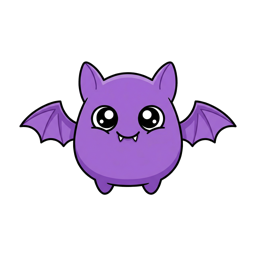

FeedBat
Discover RSS, Atom & JSON feeds on any webpage.
Automatic feed detection on every site
Finds YouTube channels' hidden RSS feeds
One-click copy or open
No accounts, no tracking, no servers
View on GitHub
Privacy Policy